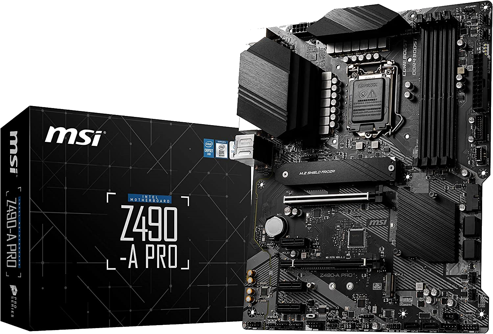

La carte mère est un composant essentiel pour l'ordinateur, car elle relie les différents composants entres eux afin de les faire fonctionner en harmonie, c'est aussi le support physique du processeur, de la RAM, ou eventuellement de la carte graphique ou du SSD M.2.

Les rôles de la carte mère:
- Lien entre les composants
- Support du processeur
- Support de la RAM
- Gestion des ports PCI pour la carte graphique, SSD NVMe...
- Gestion des ports SATA pour les disques durs
- Gestion de l'initialisation (BIOS, UEFI...)
- Gestion de la connectique de base (USB, écran, son, bouton d'alimentation...)
Comment choisir sa carte mère:
- Choisir le bon socket et chipset en fonction du processeur
- Choisir le bon format (ATX, MiniATX...) en fonction du boitier
- Regarder la connectique
Voici une vidéo expliquant plein d'éléments interressants: